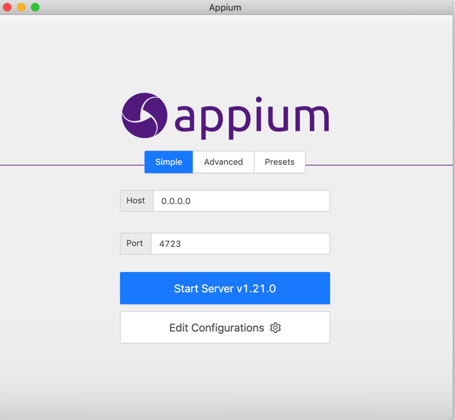
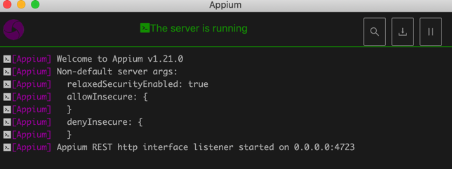
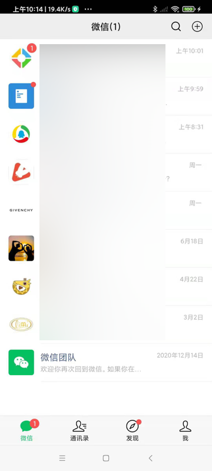
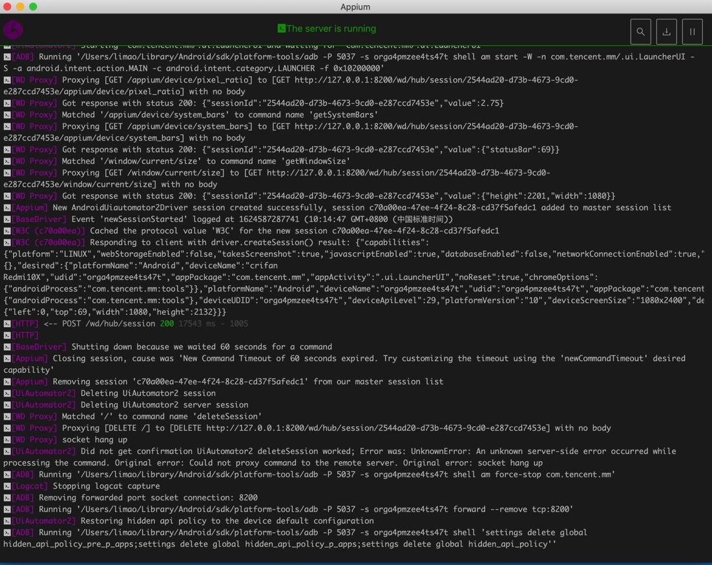
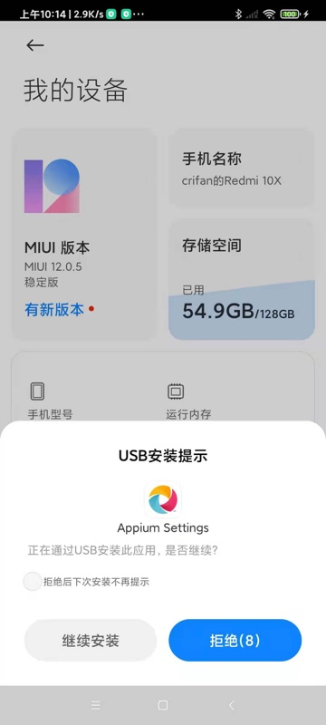
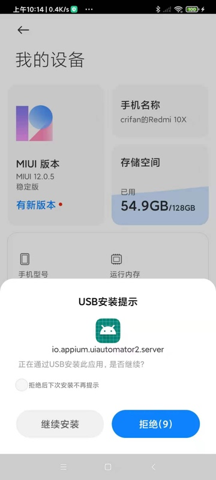

搭建环境
Mac中搭建Appium自动化操作安卓的环境
Mac中安装Appium Desktop并启动Appium服务
去Appium的官网，找到的Github的Release页面
下载最新版Appium的Mac客户端。
此处是：Appium-1.21.0-mac.zip
下载，解压，得到：Appium.app，拖动到应用程序，即可安装。
双击Appium打开：

- 默认参数
Host：0.0.0.0Port：4723
点击Start Server，以启动Appium的服务（供client端调用接口）
看到log显示：

Appium REST http interface listener started on 0.0.0.0:4723
说明Appium的server端，启动成功
Mac中安装Appium的Python库
pip install Appium-Python-Client
- 如果用
pipenv，则是pipenv install Appium-Python-Client
Mac中：测试代码
from appium import webdriver
server = 'http://localhost:4723/wd/hub’
Android_Redmi10X_DeviceName = "crifan Redmi10X"
Android_Redmi10X_UDID = "orga4pmzee4ts47t"
desired_caps = {
"platformName": "Android",
"deviceName": Android_Redmi10X_DeviceName,
"udid": Android_Redmi10X_UDID,
"appPackage": "com.tencent.mm",
"appActivity": ".ui.LauncherUI",
"noReset": True
}
desired_caps['chromeOptions'] = {'androidProcess': 'com.tencent.mm:tools'}
desired_caps['noReset'] = True
driver = webdriver.Remote(server, desired_caps)
- Capability的参数
- 最核心的三个
platformName：Android- 表示安卓平台
udid：安卓设备的序列号，设备唯一编号- 可以通过
adb devices找到- 比如：
# adb devices List of devices attached orga4pmzee4ts47t device - 中的
orga4pmzee4ts47t
- 比如：
- 可以通过
deviceName：随便填个值（当然最好是见名知意用户看得懂的值）- 比如
"deviceName": "crifan Redmi10X",
- 比如
- 详见
- 最核心的三个
效果：
- 正常打开了微信app
- 
- Appium Desktop客户端中输出对应的log
- 图
- 
- （拷贝出的）文字
[debug] [35m[WD Proxy][39m Proxying [POST /session] to [POST http://127.0.0.1:8200/wd/hub/session] with body: {"capabilities":{"firstMatch":[{"platform":"LINUX","webStorageEnabled":false,"takesScreenshot":true,"javascriptEnabled":true,"databaseEnabled":false,"networkConnectionEnabled":true,"locationContextEnabled":false,"warnings":{},"desired":{"platformName":"Android","deviceName":"crifan Redmi10X","udid":"orga4pmzee4ts47t","appPackage":"com.tencent.mm","appActivity":".ui.LauncherUI","noReset":true,"chromeOptions":{"androidProcess":"com.tencent.mm:tools"}},"platformName":"Android","deviceName":"orga4pmzee4ts47t","udid":"orga4pmzee4ts47t","appPackage":"com.tencent.mm","appActivity":".ui.LauncherUI","noReset":true,"chromeOptions":{"androidProcess":"com.tencent.mm:tools"},"deviceUDID":"orga4pmzee4ts47t"}],"alwaysMatch":{}}} [debug] [35m[WD Proxy][39m Got response with status 200: {"sessionId":"2544ad20-d73b-4673-9cd0-e287ccd7453e","value":{"capabilities":{"firstMatch":[{"platform":"LINUX","webStorageEnabled":false,"takesScreenshot":true,"javascriptEnabled":true,"databaseEnabled":false,"networkConnectionEnabled":true,"locationContextEnabled":false,"warnings":{},"desired":{"platformName":"Android","deviceName":"crifan Redmi10X","udid":"orga4pmzee4ts47t","appPackage":"com.tencent.mm","appActivity":".ui.LauncherUI","noReset":true,"chromeOptions":{"androidProcess":"com.tencent.mm:tools"}},"platformName":"Android","deviceName":"orga4pmzee4ts47t","udid":"orga4pmzee4ts47t","appPackage":"com.tencent.mm","appActivity":".ui.LauncherUI","noReset":true,"chromeOptions":{"androidProcess":"com.tencent.mm:tools"},"deviceUDID":"orga4pmzee4ts47t"}],"alwaysMatch":{}},"sessionId":"2544ad20-d73b-4673-9cd0-e287ccd7453e"}} [info] [35m[WD Proxy][39m Determined the downstream protocol as 'W3C' [debug] [35m[WD Proxy][39m Proxying [GET /appium/device/info] to [GET http://127.0.0.1:8200/wd/hub/session/2544ad20-d73b-4673-9cd0-e287ccd7453e/appium/device/info] with no body [debug] [35m[WD Proxy][39m Got response with status 200: {"sessionId":"2544ad20-d73b-4673-9cd0-e287ccd7453e","value":{"androidId":"edca4ce87a26685a","apiVersion":"29","bluetooth":{"state":"ON"},"brand":"Redmi","carrierName":"","displayDensity":440,"locale":"zh_CN","manufacturer":"Xiaomi","model":"M2004J7AC","networks":[{"capabilities":{"SSID":null,"linkDownBandwidthKbps":1048576,"linkUpstreamBandwidthKbps":1048576,"networkCapabilities":"NET_CAPABILITY_NOT_METERED,NET_CAPABILITY_INTERNET,NET_CAPABILITY_NOT_RESTRICTED,NET_CAPABILITY_TRUSTED,NET_CAPABILITY_NOT_VPN,NET_CAPABILITY_VALIDATED,NET_CAPABILITY_NOT_ROAMING,NET_CAPABILITY_FOREGROUND,NET_CAPABILITY_NOT_CONGESTED,NET_CAPABILITY_NOT_SUSPENDED","signalStrength":-19,"transportTypes":"TRANSPORT_WIFI"},"detailedState":"CONNECTED","extraInfo":null,"isAvailable":true,"isConnected":true,"isFailover":false,"isRoaming":false,"state":"CONNECTED","subtype":0,"subtypeName":"","type":1,"typeName":"WIFI"}],"platformVersion":"10","realDisplaySize":"1080x2400","timeZone":"Asia/Shanghai"}} [debug] [35m[ADB][39m Running '/Users/limao/Library/Android/sdk/platform-tools/adb -P 5037 -s orga4pmzee4ts47t shell dumpsys window' [info] [35m[AndroidDriver][39m Screen already unlocked, doing nothing [info] [35m[UiAutomator2][39m Starting 'com.tencent.mm/.ui.LauncherUI and waiting for 'com.tencent.mm/.ui.LauncherUI' [debug] [35m[ADB][39m Running '/Users/limao/Library/Android/sdk/platform-tools/adb -P 5037 -s orga4pmzee4ts47t shell am start -W -n com.tencent.mm/.ui.LauncherUI -S -a android.intent.action.MAIN -c android.intent.category.LAUNCHER -f 0x10200000'[debug] [35m[WD Proxy][39m Proxying [GET /appium/device/pixel_ratio] to [GET http://127.0.0.1:8200/wd/hub/session/2544ad20-d73b-4673-9cd0-e287ccd7453e/appium/device/pixel_ratio] with no body [debug] [35m[WD Proxy][39m Got response with status 200: {"sessionId":"2544ad20-d73b-4673-9cd0-e287ccd7453e","value":2.75} [debug] [35m[WD Proxy][39m Matched '/appium/device/system_bars' to command name 'getSystemBars' [debug] [35m[WD Proxy][39m Proxying [GET /appium/device/system_bars] to [GET http://127.0.0.1:8200/wd/hub/session/2544ad20-d73b-4673-9cd0-e287ccd7453e/appium/device/system_bars] with no body [debug] [35m[WD Proxy][39m Got response with status 200: {"sessionId":"2544ad20-d73b-4673-9cd0-e287ccd7453e","value":{"statusBar":69}} [debug] [35m[WD Proxy][39m Matched '/window/current/size' to command name 'getWindowSize' [debug] [35m[WD Proxy][39m Proxying [GET /window/current/size] to [GET http://127.0.0.1:8200/wd/hub/session/2544ad20-d73b-4673-9cd0-e287ccd7453e/window/current/size] with no body [debug] [35m[WD Proxy][39m Got response with status 200: {"sessionId":"2544ad20-d73b-4673-9cd0-e287ccd7453e","value":{"height":2201,"width":1080}} [info] [35m[Appium][39m New AndroidUiautomator2Driver session created successfully, session c70a00ea-47ee-4f24-8c28-cd37f5afedc1 added to master session list [debug] [35m[BaseDriver][39m Event 'newSessionStarted' logged at 1624587287741 (10:14:47 GMT+0800 (中国标准时间)) [debug] [35m[W3C (c70a00ea)][39m Cached the protocol value 'W3C' for the new session c70a00ea-47ee-4f24-8c28-cd37f5afedc1 [debug] [35m[W3C (c70a00ea)][39m Responding to client with driver.createSession() result: {"capabilities":{"platform":"LINUX","webStorageEnabled":false,"takesScreenshot":true,"javascriptEnabled":true,"databaseEnabled":false,"networkConnectionEnabled":true,"locationContextEnabled":false,"warnings":{},"desired":{"platformName":"Android","deviceName":"crifan Redmi10X","udid":"orga4pmzee4ts47t","appPackage":"com.tencent.mm","appActivity":".ui.LauncherUI","noReset":true,"chromeOptions":{"androidProcess":"com.tencent.mm:tools"}},"platformName":"Android","deviceName":"orga4pmzee4ts47t","udid":"orga4pmzee4ts47t","appPackage":"com.tencent.mm","appActivity":".ui.LauncherUI","noReset":true,"chromeOptions":{"androidProcess":"com.tencent.mm:tools"},"deviceUDID":"orga4pmzee4ts47t","deviceApiLevel":29,"platformVersion":"10","deviceScreenSize":"1080x2400","deviceScreenDensity":440,"deviceModel":"M2004J7AC","deviceManufacturer":"Xiaomi","pixelRatio":2.75,"statBarHeight":69,"viewportRect":{"left":0,"top":69,"width":1080,"height":2132}}} [info] [35m[HTTP][39m [37m<-- POST /wd/hub/session [39m[32m200[39m [90m17543 ms - 1005[39m [info] [35m[HTTP][39m [90m[39m[warn] [35m[BaseDriver][39m Shutting down because we waited 60 seconds for a command [warn] [35m[Appium][39m Closing session, cause was 'New Command Timeout of 60 seconds expired. Try customizing the timeout using the 'newCommandTimeout' desired capability' [info] [35m[Appium][39m Removing session 'c70a00ea-47ee-4f24-8c28-cd37f5afedc1' from our master session list [debug] [35m[UiAutomator2][39m Deleting UiAutomator2 session [debug] [35m[UiAutomator2][39m Deleting UiAutomator2 server session [debug] [35m[WD Proxy][39m Matched '/' to command name 'deleteSession' [debug] [35m[WD Proxy][39m Proxying [DELETE /] to [DELETE http://127.0.0.1:8200/wd/hub/session/2544ad20-d73b-4673-9cd0-e287ccd7453e] with no body [info] [35m[WD Proxy][39m socket hang up [warn] [35m[UiAutomator2][39m Did not get confirmation UiAutomator2 deleteSession worked; Error was: UnknownError: An unknown server-side error occurred while processing the command. Original error: Could not proxy command to the remote server. Original error: socket hang up [debug] [35m[ADB][39m Running '/Users/limao/Library/Android/sdk/platform-tools/adb -P 5037 -s orga4pmzee4ts47t shell am force-stop com.tencent.mm' [debug] [35m[Logcat][39m Stopping logcat capture [debug] [35m[ADB][39m Removing forwarded port socket connection: 8200 [debug] [35m[ADB][39m Running '/Users/limao/Library/Android/sdk/platform-tools/adb -P 5037 -s orga4pmzee4ts47t forward --remove tcp:8200' [info] [35m[UiAutomator2][39m Restoring hidden api policy to the device default configuration [debug] [35m[ADB][39m Running '/Users/limao/Library/Android/sdk/platform-tools/adb -P 5037 -s orga4pmzee4ts47t shell 'settings delete global hidden_api_policy_pre_p_apps;settings delete global hidden_api_policy_p_apps;settings delete global hidden_api_policy''
- 图
安卓手机：点击允许安装app
第一次运行Appium的代码，会触发Appium去给安卓手机安装必要的app：
Appium Settings- 
ios.appium.uiautomator2.server- 
io.appium.uiautomator2.server.test
注意：及时点击继续安装，允许安装。